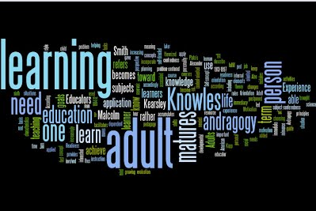

The essence of Human Resource Development is education, which plays a significant and remedial role in balancing the socio-economic framework of the country. This section is very helpful in getting information related to the elementary, secondary, higher secondary, higher and adult education etc. You can also find details of educational institutions, courses, admission procedure, scholarships, student loans, technical and medical education and vocational studies etc. Detailed information related to foreign scholarships, exchange programmes and universities etc. is provided. Related documents and forms are also available in this section.
Important Links
Website of Ministry of Human Resource Development
Information on Department of School Education and Literacy
Information on Department of Higher Education